Ten plates and one sound from the overnight build of Mandeldive, a GPU Mandelbrot explorer with
perturbation deep zoom. Every piece is drawn from a real event or real numbers from that build.
2026-09-14, the reward half hour.
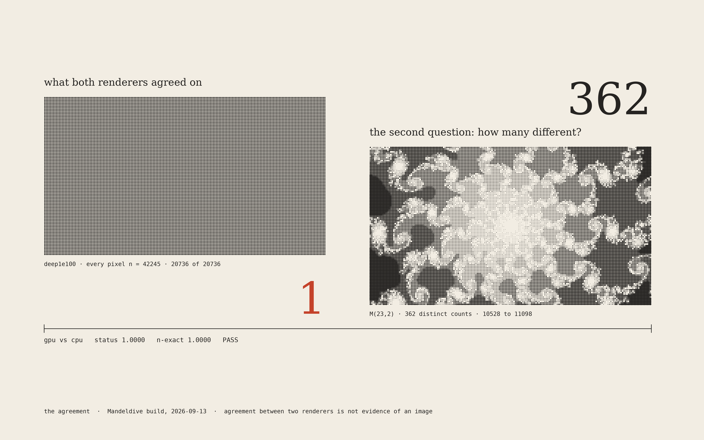
the agreementThe parity test passed at 1.0000 on a blank image: both renderers agreed that every
pixel was 42245. The question that caught it was how many different values there are. One, then 362.
AM halftone, daylight, diptych
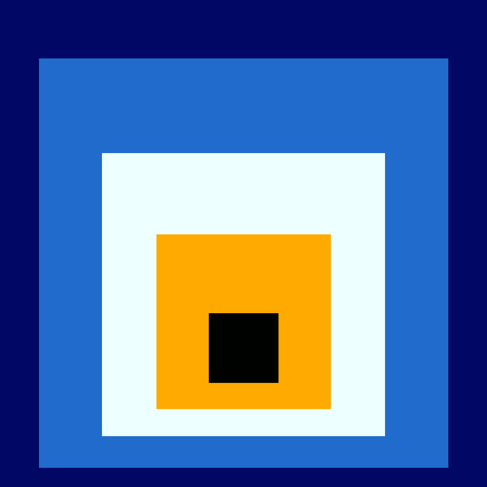
homage to the gradientMandeldive's own palette as an Albers Homage to the Square; each
square's size is its stop's position on the gradient.
hard-edge colour, homage
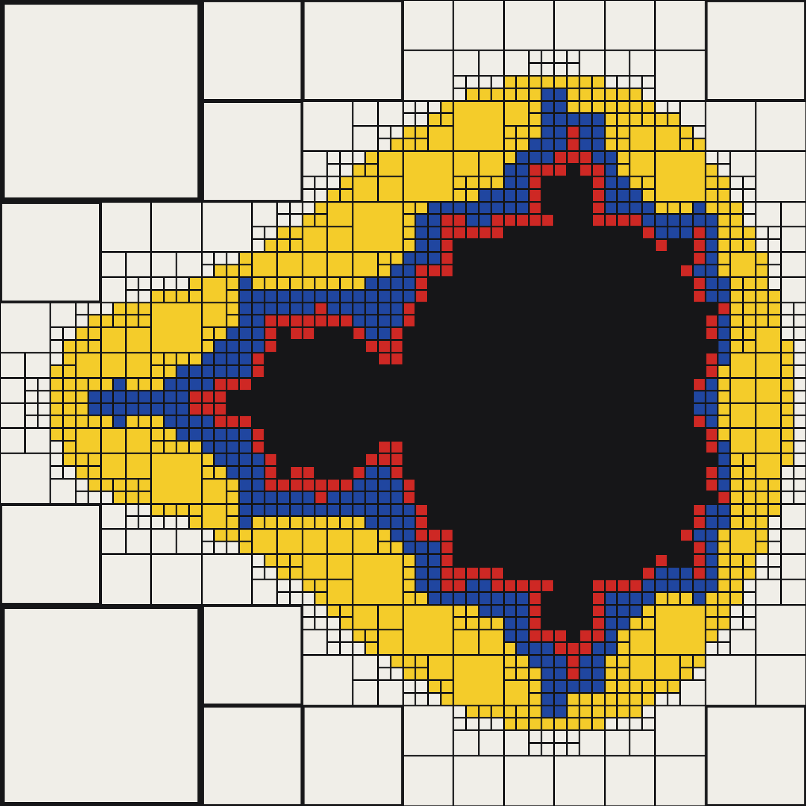
composition with escape countsA quadtree that splits wherever the escape counts change, painted in
De Stijl primaries: the grid crowds the boundary, where refinement does its work.
rule-based tiling, after Mondrian
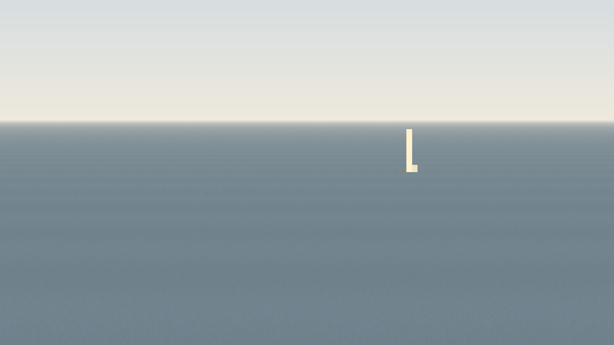
the dry spireThe flood's settled sea, with no words and no figures. The one thing still standing
is the three pixels inside the set. After Sugimoto's Seascapes.
voxel-space landscape, captionless
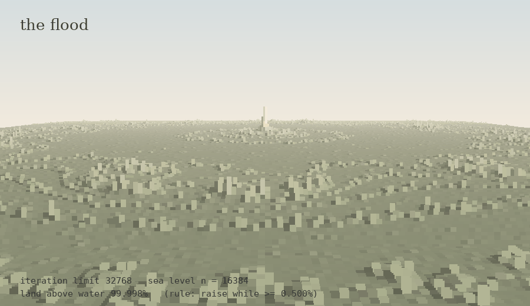
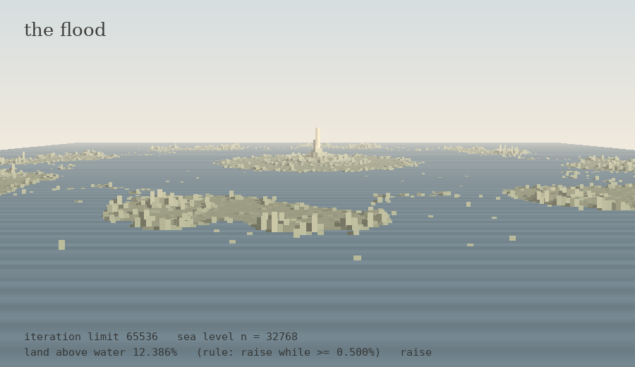
the floodEscape counts as land, the iteration limit as sea level. The rule raises the sea
while at least 0.5% of the land stands above it: 99.998%, then 12.386%, then 0.002%, and it settles.
voxel space after the 1992 demoscene technique
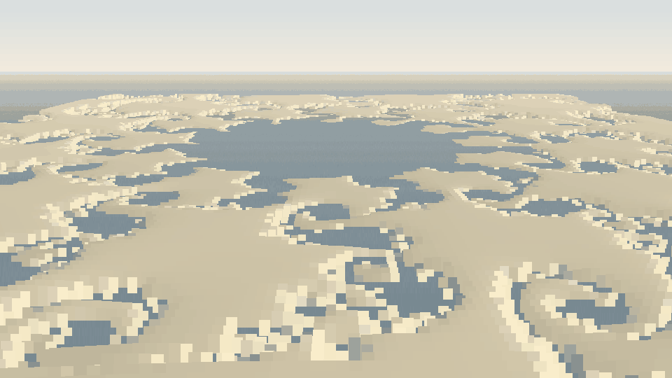
the descentThirty-two zoom steps into a Misiurewicz point. The land keeps re-forming because the
set is self-similar there; the descent never arrives.
tools/voxelspace.py, per-step normalisation
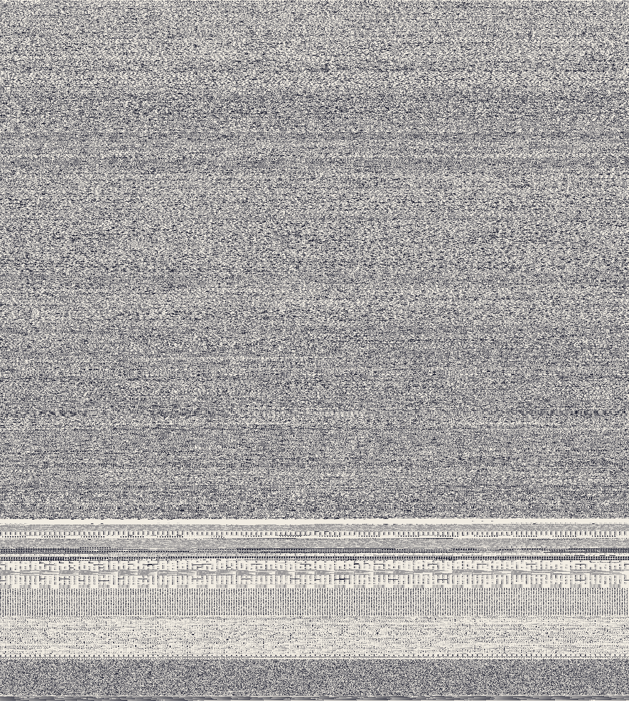
the binaryThe shipped exe itself, one byte per pixel. The code weaves a tweed; the data sections
come out as rug borders.
image-as-data, found composition
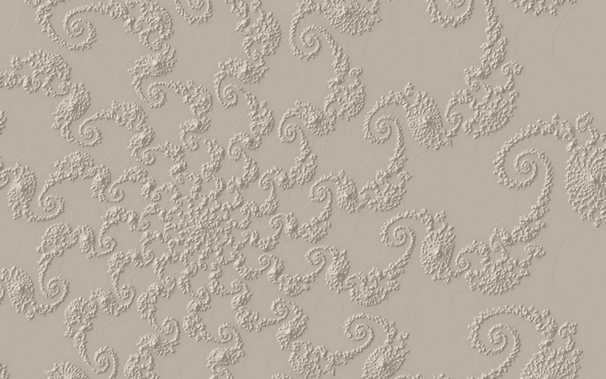
the castThe 10^250 spiral's escape counts as stucco under a raking light, with no colour ramp.
heightfield relief, stone monochrome
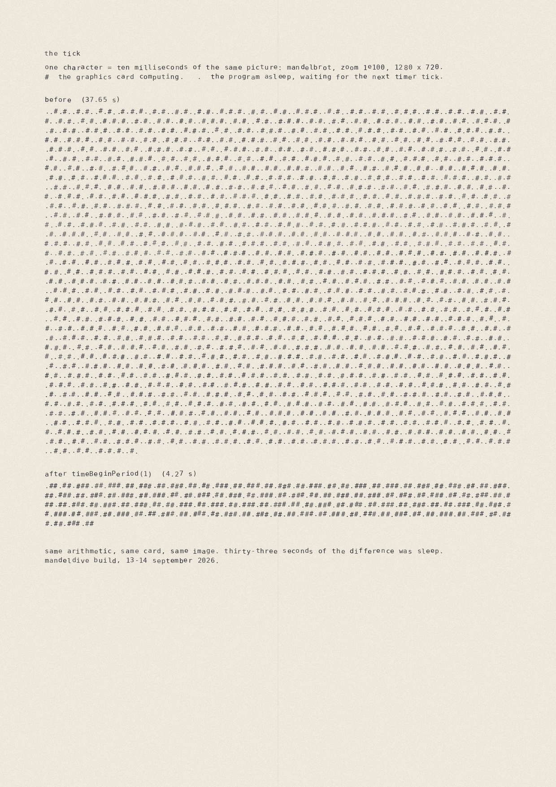
the tickOne struck character is ten milliseconds of the same render: 37.65 s of mostly sleep
before the timer fix, 4.27 s after.
typewriter strike emulation
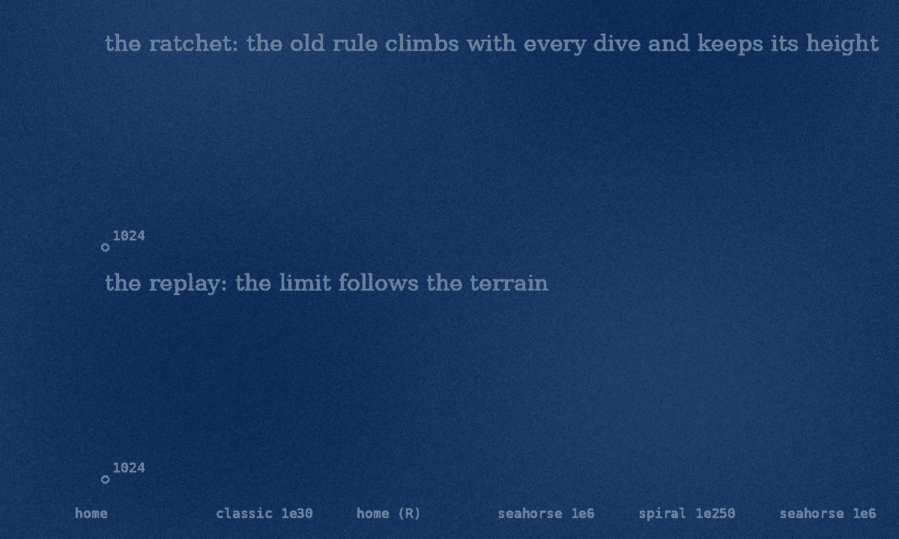
the ratchetThe old iteration rule climbed with every dive and kept its height; the replay
follows the terrain.
kinetic chart, single hue (the weakest of the set)
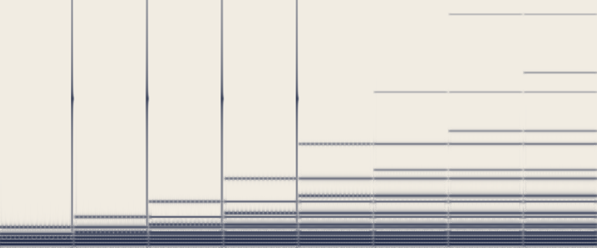
the late tailThe seahorse view's escape histogram as partials; the bucket under the rule's ear
trembles, a tick marks each raise, and after the rule settles the true tail whispers on. Unheard by its maker:
the spectrogram is the only check so far.
sonification, 20 s